"میرے والد کے ساتھ میری یادیں"
شہید مقاومت سید حسن نصر اللہ کے فرزند سید محمد مہدی نصر اللہ کی اپنے والد کے ساتھ گزری ہوئی یادوں پر مشتمل ایک دل نشین یاداشت
کتاب کے بارے میں
یہ کتاب شہید مقاومت، قائدِ حزب اللہ سید حسن نصر اللہ (رضوان اللہ علیہ) کے فرزندِ گرامی سید محمد مہدی نصر اللہ کی لکھی ہوئی ایک انتہائی پراثر اور ایمان افروز یاداشت ہے۔ اس تحریر میں سید محمد مہدی نے اپنے عظیم والد کی خاندانی زندگی، ان کے تقویٰ، اور عام زندگی کے پسِ پردہ چھپے ہوئے ان لطیف پہلوؤں کو اجاگر کیا ہے جو عام طور پر دنیا کی نظروں سے اوجھل رہے۔
کتاب کے ذریعے قارئین کو یہ سمجھنے کا موقع ملتا ہے کہ کس طرح ایک عظیم عالمی رہنما اور میدانِ جنگ کا سپہ سالار گھر کی تربیت، بچوں کی دیکھ بھال، اور خاندانی رشتوں کی پاسداری میں بھی شفقت اور حکمت کی مثال تھا۔ یہ صرف ایک یاداشت نہیں بلکہ بصیرت، صبر اور تربیت کا ایک مکمل رہنما باب ہے۔
شخصیت کی عکاسی
شہید سید حسن نصر اللہ کی روزمرہ زندگی، خاندانی سلوک اور تربیت کا گہرا جائزہ۔
ایمان افروز واقعات
فرزندِ شہید کی زبان سے سنے گئے وہ ایمان افروز لمحات جو دلوں کو منور کرتے ہیں۔
اقتباسات
قوانین کی پابندی
اگر میرے والد چاہتے تو وہ نہایت آسانی سے ہمارے لیے راستہ ہموار کر سکتے تھے اور ہمارے معاملات کو آسان بنا سکتے تھے، خواہ اس کے لیے سفارش یا اثر و رسوخ کی ہی ضرورت کیوں نہ ہوتی...
لیکن انہوں نے۔۔۔کبھی ایسا نہیں کیا۔ وہ قدس الله سرہ ایسے نہیں تھے؛ وہ قانون میں ایک ایسا تقدس دیکھتے تھے جسے پامال نہیں کیا جا سکتا، اور ایک ایسا اصول مانتے تھے جسے چھوا نہیں جا سکتا۔ قوانین کے ساتھ ان کی وابستگی ایک ایسی سخت پابندی تھی جو کسی الٰہی امر کے سامنے کھڑے ہونے سے مشابہ تھی، وہ اس میں کوئی کوتاہی نہیں کرتے تھے، اور چھوٹے سے چھوٹے معاملے میں بھی اپنے نفس کے ساتھ نرمی نہیں برتتے تھے۔ انہوں نے کبھی بھی اپنے آپ کو قوانین سے مستثنیٰ نہیں سمجھا، اور جو چیز دوسروں پر حرام کی، اسے کبھی اپنے لیے حلال نہیں جانا۔
ایک مرتبہ، مجھے حزب الله کے اداروں میں سے ایک ادارے میں ملازمت حاصل کرنے کا موقع ملا، اور میں اس کے لیے بہت پرجوش تھا، لیکن میری عمر ایک رکاوٹ تھی، جو مطلوبہ قانونی عمر سے صرف ایک یا دو ماہ کم تھی، اور اگر میں فوراً اس ملازمت سے نہ جڑتا، تو یہ موقع اگلے سال تک کے لیے میرے ہاتھ سے نکل جاتا۔
میں نے ان سے درخواست کی کہ وہ کوئی راستہ نکال دیں۔۔۔لیکن انہوں نے انکار کر دیا، اور مجھ سے اگلے سال تک انتظار کرنے کو کہا۔ اسی طرح ضرورت کے باوجود انہوں نے مجھے کار یا موٹر سائیکل رکھنے کی اجازت بھی نہیں دی، یہاں تک کہ میں قانونی عمر کو پہنچ گیا اور میں نے سرکاری لائسنس حاصل کر لیا۔
مبلغین کے لیے نصیحت
نشستوں میں سے ایک نشست میں، جب میں اُن سے تبلیغ کے بارے میں گفتگو کر رہا تھا، تو انہوں نے مجھ سے فرمایا کہ یہ بات اہم ہے کہ ایک مبلغ کو قرآنِ کریم، نہج البلاغہ اور صحیفہ سجادیہ کے کچھ حصے زبانی یاد ہونے چاہئیں...
پھر انہوں نے بات یوں مکمل کی: ’’اگر کوئی شخص پورا قرآن حفظ کرنے کی استطاعت رکھتا ہو، تو یقیناً یہ سب سے بہتر ہے، لیکن اگر وہ ایسا نہ کر سکے، جیسا کہ اکثریت کا حال ہے، تو اسے موضوعاتی طور پر حفظ کرنا چاہیے‘‘۔
میں نے ان سے پوچھا: ’’وہ کیسے؟‘‘ انہوں نے فرمایا: ’’جہاد، شہادت، صبر، توبہ اور ہدایت جیسے موضوعات کی آیات کو یکجا کرنے اور انہیں حفظ کرنے کے ذریعے، کیونکہ یہ طریقہ تبلیغ میں زیادہ فائدہ مند اور افادیت کے زیادہ قریب ہے۔ اور اسی طرح نہج البلاغہ ہے، اس میں سے ان حصوں کو حفظ کرنا اہم ہے جن سے خطابات میں مدد لی جاتی ہے، خواہ اس کی عبارتیں مشکل ہی کیوں نہ ہوں، لیکن انہیں زبانی پیش کرنا ایک خاص اثر چھوڑتا ہے‘‘۔
پھر وہ مسکرائے اور انہوں نے مجھے ایک دلچسپ واقعہ سنایا: ’’علماء میں سے ایک عالم نے ہمیں، یعنی مجھے اور طلبہ کے ایک گروپ کو جب ہم اپنی جوانی کے ابتدائی دور میں تھے، اس بات پر قائل کر لیا تھا کہ ہم روزانہ قرآن کا ایک صفحہ اور نہج البلاغہ کا ایک صفحہ پڑھیں، اور انہوں نے ہمیں اس بات پر بھی قائل کر لیا کہ ہم ایسا کرنے کی قسم کھائیں تاکہ خود کو اس کا پابند بنا سکیں۔ ہم نے ایک خاص مدت تک اس کی پابندی کی۔۔۔لیکن یہ ایک مشکل کام اور بھاری بوجھ تھا، کیونکہ اگر ہم کسی بھی وجہ سے اس کی مخالفت کرتے (پورا نہ کر پاتے) تو گناہگار ہوتے، چنانچہ ہم میں سے ہر ایک نے اپنے والد سے رجوع کیا، کیونکہ ہم اس وقت امام خمینی قدس سرہ کی تقلید میں تھے تاکہ وہ ہماری قسم کو ختم کروا دیں، اور ہمارے ساتھ ایک شیخ تھے جن کے والد اور دادا دونوں وفات پا چکے تھے، اس لیے وہ کچھ نہ کر سکے۔ میرا خیال ہے کہ وہ اب تک اس پر کاربند ہیں، اور شاید انہوں نے پورا قرآن اور نہج البلاغہ حفظ کر لیا ہو۔۔۔لیکن حقیقت میں اس حفظ کی ایک عجیب برکت تھی‘‘۔
بغیر گفتگو کے دعوت دینے والے
ہمارے والد ہمیں بطورِ خاندان اکٹھا نہیں کرتے تھے کہ وہ ہمارے سامنے کوئی وعظ و نصیحت فرمائیں، کیونکہ یہ اُن کا اسلوب ہی نہیں تھا، بلکہ وہ اپنے طرزِ عمل اور اپنے افعال سے ہمیں سکھایا کرتے تھے...
اپنی اُس خاموش گفتگو کے ذریعے جس کی تصدیق ان کا عمل کرتا تھا۔ ہم اُنہیں دیکھتے تھے کہ وہ اپنے آس پاس والوں کے ساتھ کیسا معاملہ کرتے ہیں، وہ کس طرح پورے خشوع کے ساتھ نماز کے لیے تیار ہوتے ہیں، وہ طہارت اور وضو کا کتنا خیال رکھتے ہیں، اور وہ کس طرح ہمیشہ الله کو یاد رکھتے ہیں، وہ اسے ہر چیز سے پہلے، اس کے اندر اور اس کے بعد دیکھتے تھے۔
ہم نے اُنہیں اس حال میں دیکھا کہ ذکرِ الٰہی نہ اُن کی زبان سے جدا ہوتا تھا، نہ اُن کے دل سے، اور نہ ہی ان کی حرکات و سکنات سے۔ وہ صرف اپنی زبان سے خطیب نہیں تھے، بلکہ وہ اپنے قول سے پہلے اپنے طرزِ عمل سے اللہ کی طرف دعوت دینے والے تھے۔
وہ امام صادق ؑ کی اس حدیث کے سچے ترجمان تھے: ’’کونوا دعاةً للناس بغیر ألسنتکم۔۔۔‘‘ (لوگوں کو اپنی زبانوں کے علاوہ اپنے عمل سے دعوت دینے والے بنو)۔
تبصرے
رابطہ و تقسیم کنندگان
کتاب حاصل کرنے کے لیے درج ذیل مراکز اور مکتبات سے رابطہ کریں
پیشکش
کتاب کی تیاری، ترجمہ اور اشاعت میں شامل اراکینِ کاوش
محمد مہدی حسن نصراللہ
شاکر علی مصطفائی
